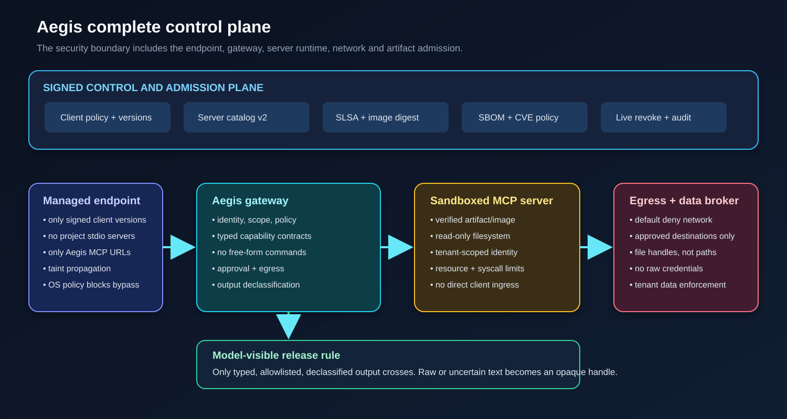

G1 Semantic gateway
The current hardened profile: identity, policy, resource scope, operator schema, approval, egress checks, catalog pins, audit, rate limits, result screening and redaction. It governs MCP traffic that reaches it.
THREAT MODELING
This page is the plain-language companion to the security review. It states the one claim Aegis can make under its full boundary, lists the controls that are enforced and tested today, and names, without softening, the findings that remain open, the components Aegis does not own, and the checks this host could not run.
THE CLAIM
The gateway alone reaches a hard limit. A client exploit that runs before the HTTP request never enters the request path, and a backend that opens its own socket acts in another process the engine cannot observe. To close most of that gap, Aegis has to grow from one gateway process into a controlled system boundary: a managed endpoint, the semantic gateway, signed admission for every client, server artifact, plug-in and policy, a sandboxed server runtime with default-deny network, a data broker that hands out handles instead of raw paths, an output declassification gate, and live revocation with retained evidence.

Under that boundary the precise claim is: no unadmitted tool request and no raw, untrusted tool result crosses the Aegis-controlled boundary. Aegis still cannot claim that admitted software has no defect. Scans, signatures and provenance cannot prove the absence of an unknown flaw. Isolation and least privilege keep such a flaw unable to escape its assigned capability.
CONTROL LEVELS
The current hardened profile: identity, policy, resource scope, operator schema, approval, egress checks, catalog pins, audit, rate limits, result screening and redaction. It governs MCP traffic that reaches it.
Adds artifact admission, process isolation, backend network policy, tenant-scoped credentials, and removal of direct client-to-server routes. This contains backend-internal defects and malicious unchanged behavior.
Adds endpoint policy, client admission, bypass prevention, taint propagation and a strict output release rule. Arbitrary backend text does not enter model context; it becomes a typed object or an opaque handle.
A deployment may call itself complete control only at G3 and only while every mandatory control reports healthy. A missing endpoint attestation, stale vulnerability receipt, disabled network policy, unavailable declassifier or unsigned catalog must make admission fail.
ENFORCED TODAY
Each control below has a class that enforces it and a test that must stay green. Breaking one is treated as a vulnerability. These are the gateway-ownable controls that passes four to seven added or hardened.
A signed server catalog decides at startup which servers may start. A signed deployment attestation and host-anchored plugin digest gate what the engine will load. Free-form execution contracts are refused under complete control.
Structured allowlist and handle-only output policies keep raw backend text away from the model. Retained handle bodies can be encrypted with AES-256-GCM. The audit journal is hash-chained with signed checkpoints and a SIEM sink interface.
Static analysis is now part of the build. SpotBugs with FindSecBugs at maximum effort reported 72 findings on the first run; the real defects (constant-time digest comparison, a regex denial-of-service path, null guards and dead code) were fixed, and every remaining exclusion carries a written reason in spotbugs-exclude.xml. CodeQL and OSV workflows are committed for CI.
OWASP MCP AND LLM
Across the OWASP MCP Top 10 and the OWASP LLM Top 10, 13 of 20 risks reach a closed state on the gateway path or the managed path. The gateway-ownable part of every other risk is also implemented. Seven risks have a part that no tool gateway can own, and those are listed as external below.
Read the full OWASP MCP and LLM mapping with the class and test behind each row.
WHAT AEGIS DOES NOT HAVE
These are not hidden. After the seventh pass, every finding that Aegis code can close is closed and tested, with the exceptions below. They are performance or scope limits, or controls that a gateway cannot own in principle.
| Id | Finding | State and reason |
|---|---|---|
| P-1 | Prompt-injection screening is a phrase list. Confusables and five language packs are folded in, but paraphrase and languages outside the packs pass. | Not fully fixable in code. A word list cannot judge intent. The durable control is complete-control output policy plus approval for every write; a classifier remote hook raises the bar further. |
| P-2 | The checkpoint signing key sits on the gateway host. Root on that host holds both the journal and the key. | Deployment, not code. A signing process needs a key it can read. Closing it means WORM or object-lock storage for checkpoints, or signing on a separate host. The code supports both paths. |
| P-4 | Pinned HTTP opens a fresh TCP and TLS connection per call, with no pool and no HTTP/2. | Fixable, deliberately deferred. Purely performance. A pinned keep-alive pool adds stale-connection and pin-invalidation risk for no security gain. |
| P-6 | The confusables table is a curated Cyrillic, Greek, Armenian and IPA subset, not the full Unicode TR39 data. | Fixable only at build time; left curated. Generating the complete table from the Unicode source is the only full fix; a hand-added partial set risks wrong mappings. |
| P-7 | Pre-authentication limits are per address or per IPv6 /64. A flood from many networks is bounded only by the worker pool and connection cap. | Not fixed by choice. A global cap is itself a denial-of-service lever: one attacker would trip it for everyone. Distributed floods belong to edge rate limiting in front of Aegis. |
| P-8 | Retained handle bodies were stored redacted but in plaintext in the state store. | Fixed in the seventh pass with optional AES-256-GCM, and still best paired with database at-rest encryption and a short retention window. |
The complete-control components in the plane diagram are a design with a staged roadmap. The endpoint guard, the admission controller for artifact and image verification, the managed sandbox runtime, and the deployment operator are specified and partly seamed into the current tree, but they are not all shipped. A deployment reaches the full G3 claim only when all of them are present and proven in one retained run.
NEEDS ANOTHER OWNER
gVisor, Linux namespaces or a microVM for stdio servers. The launcher prefix is enforced; the runtime is the platform's job and is unproven on this Windows host.
Kubernetes network policy, Helm render gates, image scanning, SBOM and Sigstore signing. Templates exist; Aegis verifies a signed statement rather than scanning images itself.
Clients that bypass Aegis, project MCP files and direct server URLs are endpoint and network control. A gateway cannot govern a path that never reaches it.
Symlink escape, SQL built inside the server, and model-side risks such as direct injection, model supply chain and weight poisoning are owned by the backend process and the model provider.
FRONTIER SCANNER REVIEW
I could not run a frontier scanner on this host, so I did that review by hand across the whole tree: following data flow between modules and trying to write an input that breaks each new control. The fifth pass found five defects I had introduced, all fixed and tested. A second re-review after the sixth pass fixed three more and triaged the static-analysis output.
Report vulnerabilities privately via a GitHub security advisory. Do not open a public issue for an unfixed vulnerability.
REFERENCE MAP